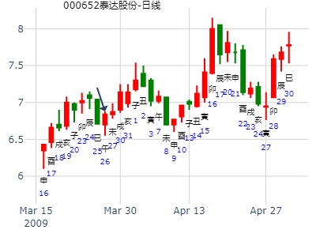
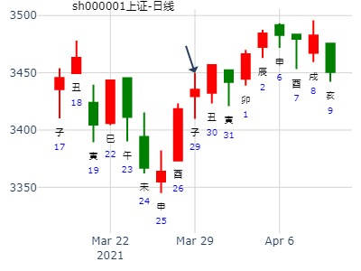
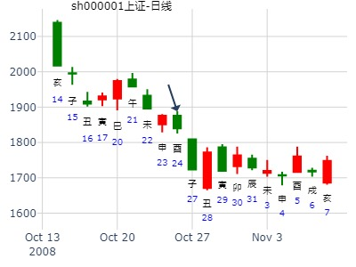
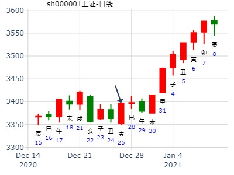

主帖标题: 断卦时如何合理用卦爻辞
《断卦时如何合理利用爻辞》 尚旭
由易辞断卦从周代便已开始,而且汉代以前,易辞是断卦的主要手段之一,由易辞决断吉凶,由易辞指导实践是经常的事。春秋战国时期留传下来的很多筮例,都把易辞放到了头等位置。从汉代京房发明了“纳甲法”,到宋代又发展成“火珠林法”后,在这套体系中,易辞的作用被大大削弱了。到了清代的野鹤老人的《增删卜易》达到了只运用六亲干支间的生克制化,而把易辞、卦象全部抛弃的程度。然而,宋代邵雍发明的梅花易数体系中,易辞做为断卦的一个手段,却一直在应用中,许多梅花易数占例中,易辞在卦中应验如神。
改革开放以后,我国研易的人数逐年增多,在周易预测、决策方面,只用五行生克制化来决断吉凶,远离了周易的哲学思想,抛弃了易辞对未来的警示性、前瞻性、指导性,已经不能满足时代的需要。发展中的、逐渐国际化的中国需要周易预测,更需要周易的哲学思想来指导实践,因此,对易辞理论、应用的研究,是社会发展的需要。卦爻辞具有神秘性,可信性,快速断卦。但是卦爻辞,大多是古汉语。艰涩难懂,怎么理解?何时用?怎么用?在使用的时候很难把握。
北京的张春华老师在这方面已经有了20多年的研究,对于每一个爻辞,甚至是每一句话,每一个字,在实际断卦中的应用都深有研究。有幸拜张春华先生为师,也学习了一些卦爻辞的断法,同时自己也对断卦时合理利用卦爻辞有了一些更深的体会。
一、用卦爻辞的时候一定首先深刻理解这个卦的卦辞,卦辞决定着这个
1 卦的宗旨和主要意义,也影响着本卦爻辞的整体思路。
因为张春华老师在实际的断卦过程中有大量的实例,我们重点要讲其中一卦,泽风大过卦。大过卦是震宫的第七卦,是游魂卦。
泽风大过(游魂卦)
▅▅妻财丁未土
▅▅▅官鬼丁酉金
子孙庚午火▅▅▅父母丁亥水世
▅▅▅官鬼辛酉金
兄弟庚寅木▅▅▅父母辛亥水
▅▅妻财辛丑土应
卦辞:栋桡利有攸往亨。
通过卦辞大致的可以给这个卦定一个基本的轮廓,这是一个谈房子的卦。超过了合理的限度,或是建筑施工不合理,房屋的栋梁被压弯了,在这处房子里居住,心里不塌实,还是外出或出远门谋职求财好,而且亨通顺利。
从卦象上看,初六及上六爻都是阴爻,二、三、四、五为阳爻,像一个弯曲的栋梁,两头为虚,中间为实,也有栋桡不结实的象。
通过对爻辞的分析:
本人亲属及你最关心的人中,容易发生以下几种现象需要注意。
(1)有离开祖居地外出谋生之象。
(2)注意因自己判断失误造成大的过错。(3)逢得此卦的人,家中住房或公司的房子恐怕老化,不堪负荷,严重者有房塌的现象。就是新盖的房,也要注意,恐建筑质量不好,也存在危险。 (4)家族中有老男少女或老女少男的婚配或感情瓜葛,有四、五十岁生育孩子的事。 (5)注意房顶漏雨或楼上漏水的现象。 二、对于古代的一些生活常识,合理应用到现代生活中去。 比如大过卦的初六:藉用白茅无咎。原意为祭祀时用白茅铺于地面,恭敬地摆放着祭品,可以无灾。但是在现在的社会中,祭祀活动也比较少。并且在祭祀的时候,也不会再用白茅等进行铺垫了,我们可以引申一下进行使用。用到现在即是,用白色装饰汽车靠垫,可减少车祸的发生。如房顶漏雨,可用白色纤维,刷上沥青进行维修,既可不漏。 三,合理利用卦爻辞,结合卦象可以推出应期。 比如下例: 壬申年,壬子月,丁丑日,己酉时,申酉空。曾先生,三十多岁,香 港人。曾光荣先生是香港人,在北京的‘松鹤大酒店’任值班经理,慕名 找张春华老师求测。得以下卦: 泽风大过(游魂卦)泽水困(六合卦) (青龙)▅▅▅▅才丁未▅▅▅▅才丁未 (玄武)▅▅▅▅▅官丁酉▅▅▅▅▅官丁酉 (白虎)▅▅▅▅▅父丁亥世(子孙午)▅▅▅▅▅父丁亥 (螣蛇)O▅▅▅▅▅官辛酉▅▅▅▅子戊午 (勾陈)▅▅▅▅▅父辛亥(兄弟寅)▅▅▅▅▅才戊辰 (朱雀)▅▅▅▅才辛丑应▅▅▅▅兄戊寅通过大过卦九三爻辞:栋桡凶。房柁或横梁老化,弯曲或质量不好,容易有房顶掉下之事,凶险。分析卦象:卦象,两头虚,中间实,所以房 梁不结实,并且上卦是兑2,下挂是巽为5,所以断应期为2、5、7天。 以二爻父母亥水为酒店,临勾陈化辰土回头克,又化墓。父母亥水之 原神官鬼酉金旬空动化午火回头克,又动而化破,不能生助亥水宅爻,又 动而随官入日墓,万事不吉。《大过》为任务过重,力所不支。变《困》 卦有被何事所困之象。目前官鬼酉金空亡,还入日墓,93年1月2日癸 未填实,1月3日甲申出空,1月4日官鬼酉金当值。上卦兑二,加下卦 巽五,共七天,从今晚至1月3日甲申正好七天,因此张春华老师断到:你们‘松鹤酒店’在93年1月3日要出事,与房子有关,1月4日以后酒店的生意会大幅下降。 结果:1993年1月3日晚上,松鹤大酒店的屋顶塌落,幸亏没有砸伤人,第二天客人几乎都吓跑了。 四.在使用卦爻辞的时候,一定要灵活变通,能够做到法无定数。
000559 万向钱潮2022年卦。
时间: 2022-01-07 11时03分
干支: 辛丑年辛丑月庚申日 (旬空: 子丑 )
大过静卦 (游魂)
腾蛇 ▅▅ ▅▅ 妻财未土
勾陈 ▅▅▅▅▅ 官鬼酉金
朱雀 子孙午火▅▅▅▅▅ 父母亥水 世
青龙 ▅▅▅▅▅ 官鬼酉金
玄武 兄弟寅木▅▅▅▅▅ 父母亥水
白虎 ▅▅ ▅▅ 妻财丑土 应
泽风大过静卦。 000559 万向钱潮2022年卦。
年卦：捷顺科技到明年立春走势如何?泽风大过静卦。.md
时间: 2021-02-04 23时19分 子时
干支: 辛丑年庚寅月癸未日 (旬空: 申酉 )
注：按普通子时排卦为甲申日（午未空）
大过静卦 (游魂)
白虎 ▅▅ ▅▅ 妻财未土
腾蛇 ▅▅▅▅▅ 官鬼酉金
勾陈 子孙午火▅▅▅▅▅ 父母亥水 世
朱雀 ▅▅▅▅▅ 官鬼酉金
青龙 兄弟寅木▅▅▅▅▅ 父母亥水
玄武 ▅▅ ▅▅ 妻财丑土 应
主帖标题: 试测方大炭素2.25收盘走势
排卦：元亨利贞网六爻在线排盘系统 https://www.china95.net
公历起卦时间：2021年2月25日8时47分 (电脑自动)
干支：辛丑年 庚寅月 甲辰日 戊辰时 （日空：寅卯）
震宫：泽风大过 (游魂)
玄武 妻财丁未土 ▅▅ ▅▅
白虎 官鬼丁酉金 ▅▅▅▅▅
螣蛇 子孙庚午火 父母丁亥水 ▅▅▅▅▅ 世
勾陈 官鬼辛酉金 ▅▅▅▅▅
朱雀 兄弟庚寅木 父母辛亥水 ▅▅▅▅▅
青龙 妻财辛丑土 ▅▅ ▅▅ 应
多谢在技术上的帮助和指点。
再看一下相同的卦：000652,
起卦方式：手工指定 www.iqing.net 线上排盘系统
公历时间：2009年3月26日10时36分 星期四
干支：己丑年 丁卯月 庚午日 辛巳时 (旬空：戌亥）
震宫：泽风大过（游魂）
螣蛇 ▅▅ ▅▅ 妻财丁未土
勾陈 ▅▅▅▅▅ 官鬼丁酉金
朱雀 子孙庚午火 ▅▅▅▅▅ 父母丁亥水 世
青龙 ▅▅▅▅▅ 官鬼辛酉金
玄武 兄弟庚寅木 ▅▅▅▅▅ 父母辛亥水
白虎 ▅▅ ▅▅ 妻财辛丑土 应
当时此股是卯月。一直在底部横盘。
仅十几天，进入辰月，此股开始拉升。

主帖标题: 捍卫老祖宗感通卦尊严：测2020.3.16上证收盘走势？2赛01
测2020.3.16上证收盘十位数jnm6yn
男 占事：没填
公历起卦时间：2020年3月16日12时48分 (电脑自动)
干支：庚子年 己卯月 戊午日 戊午时 （日空：子丑）
震宫：泽风大过 (游魂) 震宫：泽风大过 (游魂)
六神 伏神 本 卦 变 卦
朱雀 妻财丁未土 ▅▅ ▅▅ 妻财丁未土 ▅▅ ▅▅
青龙 官鬼丁酉金 ▅▅▅▅▅ 官鬼丁酉金 ▅▅▅▅▅
玄武 子孙庚午火 父母丁亥水 ▅▅▅▅▅ 世 父母丁亥水 ▅▅▅▅▅ 世
白虎 官鬼辛酉金 ▅▅▅▅▅ 官鬼辛酉金 ▅▅▅▅▅
螣蛇 兄弟庚寅木 父母辛亥水 ▅▅▅▅▅ 父母辛亥水 ▅▅▅▅▅
勾陈 妻财辛丑土 ▅▅ ▅▅ 应 妻财辛丑土 ▅▅ ▅▅ 应

主帖标题: 试测上证3.9丙辰二-3.12己未五哪日顶？
男 占事：没填
公历起卦时间：2021年3月10日8时28分 (电脑自动)
干支：辛丑年 辛卯月 丁巳日 甲辰时 （日空：子丑）
震宫：泽风大过 (游魂) 震宫：泽风大过 (游魂)
六神 伏神 本 卦 变 卦
青龙 妻财丁未土 ▅▅ ▅▅ 妻财丁未土 ▅▅ ▅▅
玄武 官鬼丁酉金 ▅▅▅▅▅ 官鬼丁酉金 ▅▅▅▅▅
白虎 子孙庚午火 父母丁亥水 ▅▅▅▅▅ 世 父母丁亥水 ▅▅▅▅▅ 世
螣蛇 官鬼辛酉金 ▅▅▅▅▅ 官鬼辛酉金 ▅▅▅▅▅
勾陈 兄弟庚寅木 父母辛亥水 ▅▅▅▅▅ 父母辛亥水 ▅▅▅▅▅
朱雀 妻财辛丑土 ▅▅ ▅▅ 应 妻财辛丑土 ▅▅ ▅▅ 应

男 占事：3.29上证收盘走势？
公历起卦时间：2021年3月27日11时24分 (电脑自动)
干支：辛丑年 辛卯月 甲戌日 庚午时 （日空：申酉）
震宫：泽风大过 (游魂) 震宫：泽风大过 (游魂)
六神 伏神 本 卦 变 卦
玄武 妻财丁未土 ▅▅ ▅▅ 妻财丁未土 ▅▅ ▅▅
白虎 官鬼丁酉金 ▅▅▅▅▅ 官鬼丁酉金 ▅▅▅▅▅
螣蛇 子孙庚午火 父母丁亥水 ▅▅▅▅▅ 世 父母丁亥水 ▅▅▅▅▅ 世
勾陈 官鬼辛酉金 ▅▅▅▅▅ 官鬼辛酉金 ▅▅▅▅▅
朱雀 兄弟庚寅木 父母辛亥水 ▅▅▅▅▅ 父母辛亥水 ▅▅▅▅▅
青龙 妻财辛丑土 ▅▅ ▅▅ 应 妻财辛丑土 ▅▅ ▅▅ 应

风生水起 性别：男 占事：中粮屯河到下周末
公历时间：2015年4月15日11时52分
干 支：乙未年 庚辰月 辛酉日 甲午时
旬 空：辰巳 申酉 (子丑) 辰巳
震宫：泽风大过（游魂）
六神 伏 神 【本 卦】
螣蛇 ▄▄ ▄▄ 妻财丁未土
勾陈 ▄▄▄▄▄ 官鬼丁酉金
朱雀 子孙庚午火 ▄▄▄▄▄ 父母丁亥水 世
青龙 ▄▄▄▄▄ 官鬼辛酉金
玄武 兄弟庚寅木 ▄▄▄▄▄ 父母辛亥水
白虎 ▄▄ ▄▄ 妻财辛丑土 应
主帖标题: 下周几个看好股票涨跌。
老妖股，形态好，重组概念。男
占事：002702海欣食品下周2345涨跌
公历起卦时间：2016年4月30日10时44分 (电脑自动)
干支：丙申年 壬辰月 壬午日 乙巳时 （日空：申酉）
震宫：泽风大过 (游魂) 震宫：泽风大过 (游魂)
六神 伏神 本 卦 变 卦
白虎 妻财丁未土 ▅▅ ▅▅ 妻财丁未土 ▅▅ ▅▅
腾蛇 官鬼丁酉金 ▅▅▅▅▅ 官鬼丁酉金 ▅▅▅▅▅
勾陈 子孙庚午火 父母丁亥水 ▅▅▅▅▅ 世 父母丁亥水 ▅▅▅▅▅ 世
朱雀 官鬼辛酉金 ▅▅▅▅▅ 官鬼辛酉金 ▅▅▅▅▅
青龙 兄弟庚寅木 父母辛亥水 ▅▅▅▅▅ 父母辛亥水 ▅▅▅▅▅
玄武 妻财辛丑土 ▅▅ ▅▅ 应 妻财辛丑土 ▅▅ ▅▅ 应
A股阳历4月份内行情怎样？入定观。
公历：2017年4月3日7时33分 星期一
干支：丁酉年 癸卯月 庚申日 庚辰时 日空：子丑
大过静卦(游魂)
腾蛇 ▅▅ ▅▅ 妻财未土
勾陈 ▅▅▅▅▅ 官鬼酉金
朱雀 子孙午火▅▅▅▅▅ 父母亥水 世
青龙 ▅▅▅▅▅ 官鬼酉金
玄武 兄弟寅木▅▅▅▅▅ 父母亥水
白虎 ▅▅ ▅▅ 妻财丑土 应
主帖标题: 4月1-2日大盘
男 占事：大盘
公历起卦时间：2021年4月1日8时37分 (在线摇卦)
干支：辛丑年 辛卯月 己卯日 戊辰时 （日空：申酉）
震宫：泽风大过 (游魂) 震宫：泽风大过 (游魂)
六神 伏神 本 卦 变 卦
勾陈 妻财丁未土 ▅▅ ▅▅ 妻财丁未土 ▅▅ ▅▅
朱雀 官鬼丁酉金 ▅▅▅▅▅ 官鬼丁酉金 ▅▅▅▅▅
青龙 子孙庚午火 父母丁亥水 ▅▅▅▅▅ 世 父母丁亥水 ▅▅▅▅▅ 世
玄武 官鬼辛酉金 ▅▅▅▅▅ 官鬼辛酉金 ▅▅▅▅▅
白虎 兄弟庚寅木 父母辛亥水 ▅▅▅▅▅ 父母辛亥水 ▅▅▅▅▅
螣蛇 妻财辛丑土 ▅▅ ▅▅ 应 妻财辛丑土 ▅▅ ▅▅ 应
1卯日跌 2辰日涨 3410 --3437

上证指数5月27-31日行情预测？[六爻预测][原创]再人1
起卦时间：2013年05月26日16时47分 起卦方式：手摇硬币起卦
干支：癸巳年 丁巳月 壬辰日 戊申时 旬空：午未 子丑 午未 寅卯
震宫：泽风大过（游魂）
白虎 ▅▅ ▅▅ 妻财丁未土
滕蛇 ▅▅▅▅▅ 官鬼丁酉金
勾陈 子孙庚午火 ▅▅▅▅▅ 父母丁亥水 世
朱雀 ▅▅▅▅▅ 官鬼辛酉金
青龙 兄弟庚寅木 ▅▅▅▅▅ 父母辛亥水
玄武 ▅▅ ▅▅ 妻财辛丑土 应
在线生辰八字算命公历：2017年5月6日7时55分
农历：丁酉年四月拾一 星期六
干支：丁酉年 乙巳月 癸巳日 丙辰时 日空：午未
姓名：上证指 性别：男 出生年：
占事：中国A股乙巳月内行情怎样?
【本卦】
六神 伏 神 震宫：泽风大过（游魂）
白虎 ━ ━ 妻财丁未
螣蛇 ━━━ 官鬼丁酉
勾陈 子孙庚午 世 ━━━ 父母丁亥
朱雀 ━━━ 官鬼辛酉
青龙 兄弟庚寅 ━━━ 父母辛亥
玄武 应 ━ ━ 妻财辛丑
巳月巳日，日月同，戌日入库能涨？
时间: 2019-05-11 9时34分
干支: 己亥年己巳月戊申日 (旬空: 寅卯 )
大过静卦 (游魂)
朱雀 ▅▅ ▅▅ 妻财未土
青龙 ▅▅▅▅▅ 官鬼酉金
玄武 子孙午火▅▅▅▅▅ 父母亥水 世
白虎 ▅▅▅▅▅ 官鬼酉金
腾蛇 兄弟寅木▅▅▅▅▅ 父母亥水
勾陈 ▅▅ ▅▅ 妻财丑土 应
龙隐网友，测一周行情，得大过卦。棺材卦。大过错。
沪市大盘预测(6月28～7月2日)
公历时间：2010年6月27日9时8分
干支：庚寅年 壬午月 戊申日 丁巳时 旬空：午未 申酉 寅卯 子丑
震宫：泽风大过（游魂）
朱雀 ▄▄ ▄▄ 妻财丁未土
青龙 ▄▄▄▄▄ 官鬼丁酉金
玄武 子孙庚午火 ▄▄▄▄▄ 父母丁亥水 世
白虎 ▄▄▄▄▄ 官鬼辛酉金
螣蛇 兄弟庚寅木 ▄▄▄▄▄ 父母辛亥水
勾陈 ▄▄ ▄▄ 妻财辛丑土 应

主帖标题: 金眼牛的大盘卦06.17--21
占事：6月17-21日大盘涨跌？
公历起卦时间：2013年6月14日16时41分 (手工指定)
干支：癸巳年 戊午月 辛亥日 丙申时 （日空：寅卯）
震宫：泽风大过 (游魂) 震宫：泽风大过 (游魂)
六神 伏神 本 卦 变 卦
腾蛇 妻财丁未土 ▅▅ ▅▅ 妻财丁未土 ▅▅ ▅▅
勾陈 官鬼丁酉金 ▅▅▅▅▅ 官鬼丁酉金 ▅▅▅▅▅
朱雀 子孙庚午火 父母丁亥水 ▅▅▅▅▅ 世 父母丁亥水 ▅▅▅▅▅ 世
青龙 官鬼辛酉金 ▅▅▅▅▅ 官鬼辛酉金 ▅▅▅▅▅
玄武 兄弟庚寅木 父母辛亥水 ▅▅▅▅▅ 父母辛亥水 ▅▅▅▅▅
白虎 妻财辛丑土 ▅▅ ▅▅ 应 妻财辛丑土 ▅▅ ▅▅ 应
金版好久没来论坛了，到他空间看看....
2016年7月大盘。 泽风大过静卦。.md
时间: 2016-06-30 15时46分
干支: 丙申年甲午月癸未日 (旬空: 申酉 )
大过静卦 (游魂)
白虎 ▅▅ ▅▅ 妻财未土
腾蛇 ▅▅▅▅▅ 官鬼酉金
勾陈 子孙午火▅▅▅▅▅ 父母亥水 世
朱雀 ▅▅▅▅▅ 官鬼酉金
青龙 兄弟寅木▅▅▅▅▅ 父母亥水
玄武 ▅▅ ▅▅ 妻财丑土 应
大过冲高回落之象，未日土日见顶。
氯碱化工6.23丁酉二-6.30甲辰走势？4交易日 男 占事：没填
公历起卦时间：2020年6月22日17时15分 (电脑自动)
干支：庚子年 壬午月 丙申日 丁酉时 （日空：辰巳）
震宫：泽风大过 (游魂) 震宫：泽风大过 (游魂)
六神 伏神 本 卦 变 卦
青龙 妻财丁未土 ▅▅ ▅▅ 妻财丁未土 ▅▅ ▅▅
玄武 官鬼丁酉金 ▅▅▅▅▅ 官鬼丁酉金 ▅▅▅▅▅
白虎 子孙庚午火 父母丁亥水 ▅▅▅▅▅ 世 父母丁亥水 ▅▅▅▅▅ 世
螣蛇 官鬼辛酉金 ▅▅▅▅▅ 官鬼辛酉金 ▅▅▅▅▅
勾陈 兄弟庚寅木 父母辛亥水 ▅▅▅▅▅ 父母辛亥水 ▅▅▅▅▅
朱雀 妻财辛丑土 ▅▅ ▅▅ 应 妻财辛丑土 ▅▅ ▅▅ 应
奇门：2020年6月22日行情。 雨都孟军(2020-06-21 18:14:08)
前3月12日的跳空缺口上边是2968.52点，周五最高是2973.32点，缺口已补。3127——3074点连线的压力已突破。
壬午月月奇，值符在艮宫，中气21日夏至后转入兑宫，阴遁由艮运至兑，趋势是由高走低。3月19日、5月25日、6月12日，三低点的太极共振于22日丙申23日丁酉，变盘日。上市公司年报披露接近尾声,业绩不理想的要注意风险。有可能被取消上证指数样板股的票最好回避。
从上周五钢铁板块没大的迹象就拉高的现象看，场外资金的着眼点，绝对与高位热点股内机构的看点相左，甚至出人预料。以此而言，有些低位的板块会出现无厘头拉升，拉起来再告诉你理由：超跌、业绩不赖。
时间：2020年06月22日09时30分
干支：庚子 壬午 丙申 癸巳
旬空：辰巳 申酉 辰巳 午未
本节气上元第一天为：2020年6月20日甲午
夏至：上元第3天 癸巳时旬首为庚
阴遁九局 值符天柱落四宫 值使惊门落七宫
值符 九天 九地
杜门 庚 景门 辛 死门 乙
天柱 癸 天心 戊 天蓬 丙
螣蛇 玄武
壬 伤门 丙 惊门 己
禽 天芮 丁 壬 天任 庚
太阴 六合 白虎
生门 戊 休门 癸 开门 丁
天英 己 天辅 乙 天冲 辛
天柱值符，星门演卦：泽风大过。杜门庚+癸大格，解套盘出，时干癸生值符，冲高回落。庚+癸大格：走不远的的意思，趋势打住要横盘了。
奇门：2020年6月22日行情。 雨都孟军(2020-06-21 18:14:08)

注：此贴洋洋洒洒，但是结论错。没有数理统计，各种大师全是裸奔。
主帖标题: 持有个股今年何时见顶？
姓名：姓名姓名姓名 出生年份：2020年 性别：男 占事:WLDQBSKA 下周一7.13日走势如何？
起卦方式：电脑自动 (周易世界 www.zhouyiworld.com)
公历时间：2020年7月11日20时24分 农历时间：庚子年 五月二十一日戌时
干 支：庚子年 癸未月 乙卯日 丙戌时
旬 空：辰巳 申酉 子丑 午未
神 煞：驿马─巳 桃花─子 日禄─卯 贵人─子，申
震宫：泽风大过（游魂）
六神 伏 神 【本 卦】
玄武 ▄▄ ▄▄ 妻财丁未土
白虎 ▄▄▄▄▄ 官鬼丁酉金
螣蛇 子孙庚午火 ▄▄▄▄▄ 父母丁亥水 世
勾陈 ▄▄▄▄▄ 官鬼辛酉金
朱雀 兄弟庚寅木 ▄▄▄▄▄ 父母辛亥水
青龙 ▄▄ ▄▄ 妻财辛丑土 应
涨
注：股票名怪异，权用上证代替，娱乐勿当真。
主帖标题: 手摇 医药板块 未来半年
公历：2021年7月18日12时58分，星期日。
农历：辛丑年 六月 初九日 午时。
干支：辛丑年 乙未月 丁卯日 丙午时 (卦身：酉)
主变卦 泽风大过(震宫-游魂) [空亡:戌、亥]
青龙 ▅▅ ▅▅ 妻财丁未土
玄武 ▅▅▅▅▅ 官鬼丁酉金
白虎 子孙庚午火 ▅▅▅▅▅ 父母丁亥水 世
螣蛇 ▅▅▅▅▅ 官鬼辛酉金
勾陈 兄弟庚寅木 ▅▅▅▅▅ 父母辛亥水
朱雀 ▅▅ ▅▅ 妻财辛丑土 应
占事：600820今天会涨不？ 阿晖
起卦方式：手动摇卦 易经股市论坛 www.yijingstock.com 在线排盘系统
公历时间：2014年8月7日9时36分
干 支：甲午年 辛未月 庚戌日 辛巳时 旬 空：辰巳 戌亥 (寅卯) 申酉
震宫：泽风大过（游魂）
螣蛇 ▄▄ ▄▄ 妻财丁未土
勾陈 ▄▄▄▄▄ 官鬼丁酉金
朱雀 子孙庚午火 ▄▄▄▄▄ 父母丁亥水 世
青龙 ▄▄▄▄▄ 官鬼辛酉金
玄武 兄弟庚寅木 ▄▄▄▄▄ 父母辛亥水
白虎 ▄▄ ▄▄ 妻财辛丑土 应
今天跌。丑未戌三刑
帝科股份8月。泽风大过静卦。金玉堂.md
时间: 2022-08-03 10时56分
干支: 壬寅年丁未月戊子日 (旬空: 午未 )
大过静卦 (游魂)
朱雀 ▅▅ ▅▅ 妻财未土
青龙 ▅▅▅▅▅ 官鬼酉金
玄武 子孙午火▅▅▅▅▅ 父母亥水 世
白虎 ▅▅▅▅▅ 官鬼酉金
腾蛇 兄弟寅木▅▅▅▅▅ 父母亥水
勾陈 ▅▅ ▅▅ 妻财丑土 应
帝科股份8月。泽风大过静卦。金玉堂

主帖标题: 10月27-31日大盘涨跌卦!
干支：戊子年 壬戌月 丁酉日 戊申时 (旬空：辰巳)
时间: 2008-10-24
大过静卦 (游魂)
青龙 ▅▅ ▅▅ 妻财未土
玄武 ▅▅▅▅▅ 官鬼酉金
白虎 子孙午火▅▅▅▅▅ 父母亥水 世
腾蛇 ▅▅▅▅▅ 官鬼酉金
勾陈 兄弟寅木▅▅▅▅▅ 父母亥水
朱雀 ▅▅ ▅▅ 妻财丑土 应
游魂卦，不定之卦，火藏不动，总体看跌，但跌到星期三，星期四后有涨。

五粮液未来戌亥子三个月走势？现价18.47
起卦方式：手动摇卦 易经股市论坛 www.yijingstock.com 在线排盘系统
公历时间：2014年10月7日12时0分
干 支：甲午年 癸酉月 辛亥日 甲午时
旬 空：辰巳 戌亥 (寅卯) 辰巳
震宫：泽风大过（游魂）
六神 伏 神 【本 卦】
螣蛇 ▄▄ ▄▄ 妻财丁未土
勾陈 ▄▄▄▄▄ 官鬼丁酉金
朱雀 子孙庚午火 ▄▄▄▄▄ 父母丁亥水 世
青龙 ▄▄▄▄▄ 官鬼辛酉金
玄武 兄弟庚寅木 ▄▄▄▄▄ 父母辛亥水
白虎 ▄▄ ▄▄ 妻财辛丑土 应
大过卦，一般容易跌，五粮液例外。二象性，可以是大大的超过，也可以是棺材大过错。
占事：春节前股市有没有行情？
排卦：元亨网六爻在线排盘系统 http://www.china95.net
公历起卦时间：2016年10月14日12时17分 (在线摇卦)
干支：丙申年 戊戌月 己巳日 庚午时 （日空：戌亥）
震宫：泽风大过 (游魂) 震宫：泽风大过 (游魂)
勾陈 妻财丁未土 ▅▅ ▅▅ 妻财丁未土 ▅▅ ▅▅
朱雀 官鬼丁酉金 ▅▅▅▅▅ 官鬼丁酉金 ▅▅▅▅▅
青龙 子孙庚午火 父母丁亥水 ▅▅▅▅▅ 世 父母丁亥水 ▅▅▅▅▅ 世
玄武 官鬼辛酉金 ▅▅▅▅▅ 官鬼辛酉金 ▅▅▅▅▅
白虎 兄弟庚寅木 父母辛亥水 ▅▅▅▅▅ 父母辛亥水 ▅▅▅▅▅
腾蛇 妻财辛丑土 ▅▅ ▅▅ 应 妻财辛丑土 ▅▅ ▅▅ 应

上证指数1029未来周卦，泽风大过静卦。寅兄出空出伏大跌。v.md
时间: 2021-10-29 17时07分
干支: 辛丑年戊戌月庚戌日乙酉时 (旬空: 寅卯 )
大过静卦 (游魂)
腾蛇 ▅▅ ▅▅ 妻财未土
勾陈 ▅▅▅▅▅ 官鬼酉金
朱雀 子孙午火▅▅▅▅▅ 父母亥水 世
青龙 ▅▅▅▅▅ 官鬼酉金
玄武 兄弟寅木▅▅▅▅▅ 父母亥水
白虎 ▅▅ ▅▅ 妻财丑土 应


财太旺，世爻担不住，后面亥日世爻值日大涨。
华中数控下周-by欣宝
时间: 2024-10-27
干支: 甲辰年甲戌月甲子日 (旬空: 戌亥 )
大过静卦 (游魂)
玄武 ▅▅ ▅▅ 妻财未土
白虎 ▅▅▅▅▅ 官鬼酉金
腾蛇 子孙午火▅▅▅▅▅ 父母亥水 世
勾陈 ▅▅▅▅▅ 官鬼酉金
朱雀 兄弟寅木▅▅▅▅▅ 父母亥水
青龙 ▅▅ ▅▅ 妻财丑土 应
世空，空下伏神，易于引拔？
主帖标题: 下周沪市大盘走势！
起卦方式：手动摇卦 www.iqing.net 线上排盘系统
公历时间：2005年11月7日9时53分 星期一
干支：乙酉年 丙戌月 乙未日 辛巳时 (旬空：辰巳)
大过静卦 (游魂)
玄武 ▅▅ ▅▅ 妻财未土
白虎 ▅▅▅▅▅ 官鬼酉金
腾蛇 子孙午火▅▅▅▅▅ 父母亥水 世
勾陈 ▅▅▅▅▅ 官鬼酉金
朱雀 兄弟寅木▅▅▅▅▅ 父母亥水
青龙 ▅▅ ▅▅ 妻财丑土 应
主帖标题: 大盘下周11.25-11.29
下周行情：上证
起卦公历：2013年11月23日8时0分(北京时间)。
干支： 癸巳年 癸亥月 癸巳日 丙辰时 (卦身：酉)
主变卦 泽风大过(震宫-游魂) [空亡:午、未]
白虎 ━ ━ 妻财未土
螣蛇 ━━━ 官鬼酉金
勾陈 子孙午火 ━━━ 父母亥水 世
朱雀 ━━━ 官鬼酉金
青龙 兄弟寅木 ━━━ 父母亥水
玄武 ━ ━ 妻财丑土 应
irak 发表于 2021-11-12 17:33
版主能帮忙测下同花顺300033吗？谢谢啊
300033下周涨跌
公历时间：2021年11月13日9时36分
干 支：辛丑年 己亥月 乙丑日 辛巳时
旬 空：辰巳 辰巳 戌亥 申酉
震宫：泽风大过（游魂）
玄武 ▄▄ ▄▄ 妻财丁未土
白虎 ▄▄▄▄▄ 官鬼丁酉金
螣蛇 子孙庚午火 ▄▄▄▄▄ 父母丁亥水 世
勾陈 ▄▄▄▄▄ 官鬼辛酉金
朱雀 兄弟庚寅木 ▄▄▄▄▄ 父母辛亥水
青龙 ▄▄ ▄▄ 妻财辛丑土 应
周涨，一二五涨，三四跌。
主帖标题: 下周股市怎么走？
时间: 2011-12-10
干支： 辛卯年 庚子月 己亥日 庚午时 (旬空：辰巳)
震宫：泽风大过(游魂)
六神 伏 神 【本 卦】
勾陈 妻财丁未土 ━ ━
朱雀 官鬼丁酉金 ━━━
青龙 子孙庚午火 父母丁亥水 ━━━ 世
玄武 官鬼辛酉金 ━━━
白虎 兄弟庚寅木 父母辛亥水 ━━━
螣蛇 妻财辛丑土 ━ ━ 应
已经进子月了!
主帖标题: 试测上证2020.日收盘个位十位？
男 占事：1225sw-1yn
公历起卦时间：2020年12月25日12时2分 (电脑自动)
干支：庚子年 戊子月 壬寅日 丙午时 （日空：辰巳）
震宫：泽风大过 (游魂) 震宫：泽风大过 (游魂)
六神 伏神 本 卦 变 卦
白虎 妻财丁未土 ▅▅ ▅▅ 妻财丁未土 ▅▅ ▅▅
螣蛇 官鬼丁酉金 ▅▅▅▅▅ 官鬼丁酉金 ▅▅▅▅▅
勾陈 子孙庚午火 父母丁亥水 ▅▅▅▅▅ 世 父母丁亥水 ▅▅▅▅▅ 世
朱雀 官鬼辛酉金 ▅▅▅▅▅ 官鬼辛酉金 ▅▅▅▅▅
青龙 兄弟庚寅木 父母辛亥水 ▅▅▅▅▅ 父母辛亥水 ▅▅▅▅▅
玄武 妻财辛丑土 ▅▅ ▅▅ 应 妻财辛丑土 ▅▅ ▅▅ 应
注：此贴为盘中猜点位，用来测走势不一定靠谱，仅供娱乐
